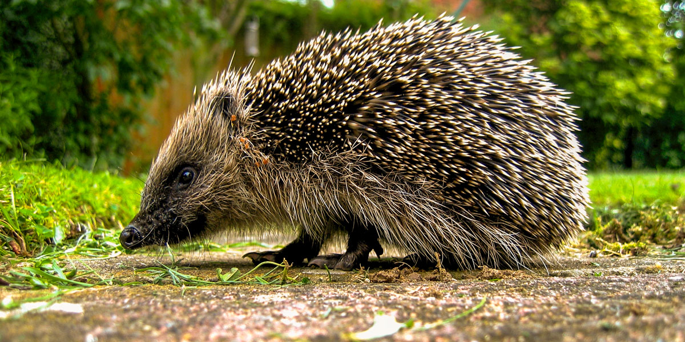
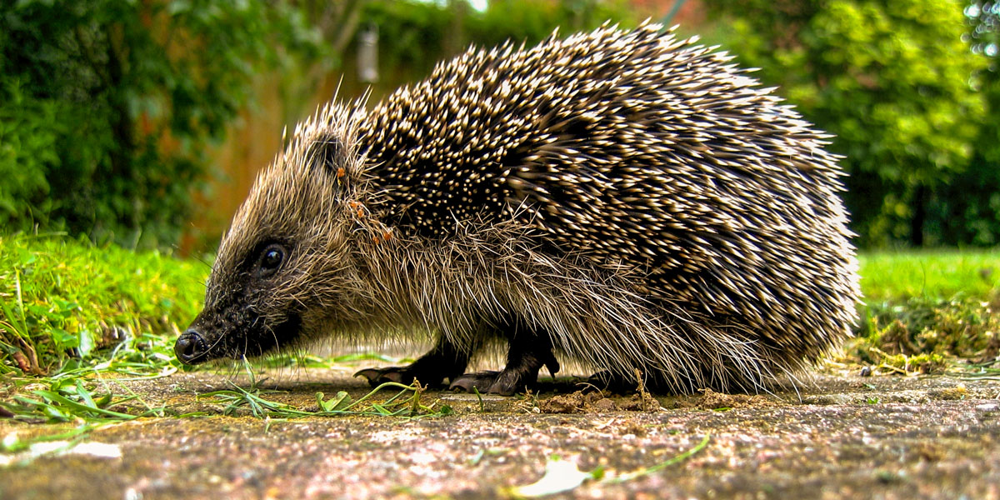

Suudab joosta lühikestes lõikudes kiirusega kuni 6,5 km/h
600 - 1200g
Omnivoor
2 - 5 aastat
Siilid on peamiselt öise eluviisiga, kuid on mõnikord aktiivsed ka päeval, eriti pärast kerget vihmasadu. Tegutseb maapinnal, liikudes peatub sageli, et haista ümbrust. Siil on võimeline edukalt ujuma. Siili peamine kaitsevahend kiskjate vastu on okaskate. Ohu korral kerib keha keraks nii, et ligipääs okastega katmata kõhupoolel olevatele kehaosadele puudub.Suveks siilid urgu ei ehita, talve veedavad aga lehtede ja rohuga vooderdatud pesas, kus magavad talveund oktoobrist-novembrist kuni märtsi-aprillini. Siilid on üldiselt üksikeluviisiga, isased võivad üksteise suhtes agressiivsed olla. Talveune ajaks võivad siilid koguneda väikestesse gruppidesse. Kodupiirkonna suuruseks on isastel 15-40 ha ja emastel 5-12 ha.
Siili söövad mäger, rebane, nugis ning kakud ja haukalised. Sagedasim loodusliku surma põhjus on külmumine talveune ajal. Sage on ka hukkumine teedel, kuid üldiselt ei peeta seda populatsiooni ohustavaks. Üle poole isenditest sureb esimesel eluaastal. Siili arvukus Eestis oletatavalt väheneb. Siil on ka Eesti punases nimestikus märgitud ohulähedasena, kuid ei kuulu kaitstavate liikide hulka.